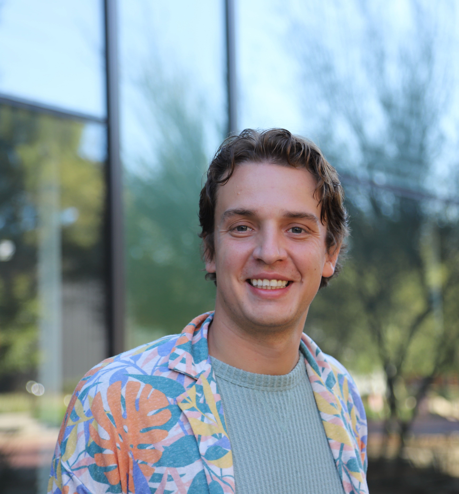
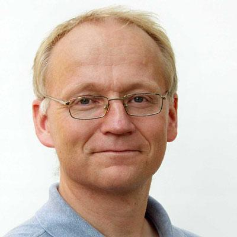
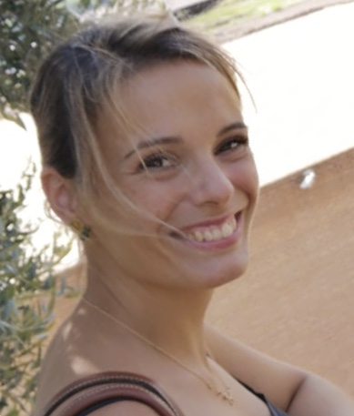
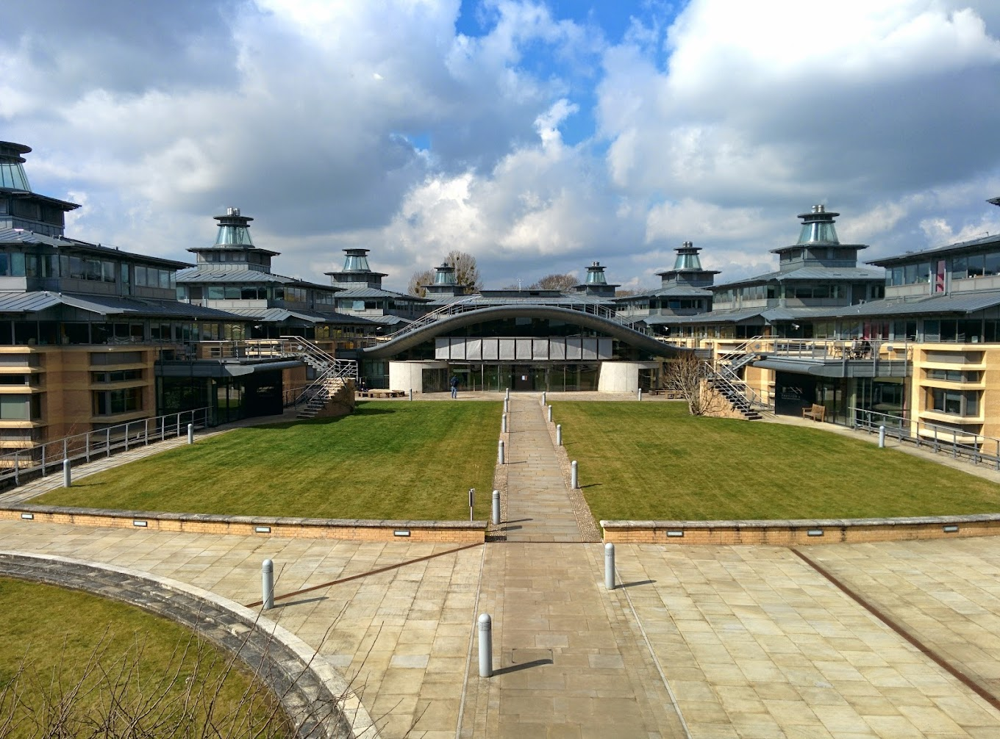

A one-week summer school providing rigorous education in the foundational mathematics of modern AI at the Centre for Mathematical Sciences (Wilberforce Road, Cambridge CB3 0WA, UK).
This summer school features four day-long lecture courses addressing topics often fragmented across different university departments. We are hosting graduate students and early career researchers to favour tight-knit interactions and collaborative dialogue.
Supported by Maths4DL and ProbAI.
Monday begins with registration at 08:30, followed by opening remarks at 08:55.
Wednesday morning is dedicated to participant talks, followed by a free afternoon to explore Cambridge.
| Time slot | Monday | Tuesday | Wednesday | Thursday | Friday |
|---|---|---|---|---|---|
| 8:30 - 8:55 am | Registration | ||||
| 8:55 - 9 am | Opening remarks | ||||
| 9 - 10:30 am | Lecture 1 Eldad Haber | Lecture 1 Nikola B. Kovachki | 6 oral presentations10+3 minutes each | Lecture 1 Audrey Repetti | Lecture 1 Brynjulf Owren |
| 10:30 - 11 am | Coffee break | Coffee break | Coffee breakGroup photo | Coffee break | Coffee break |
| 11 am - 12:30 pm | Lecture 2 Eldad Haber | Lecture 2 Nikola B. Kovachki | 6 oral presentations10+3 minutes each | Lecture 2 Audrey Repetti | Lecture 2 Brynjulf Owren |
| 12:30 - 1:30 pm | Lunch break | Lunch break | Free afternoon | Lunch break | Lunch break |
| 1:30 - 3 pm | Lecture 3 Eldad Haber | Lecture 3 Nikola B. Kovachki | Lecture 3 Audrey Repetti | Lecture 3 Brynjulf Owren | |
| 3 - 3:30 pm | Coffee break | Coffee break | Coffee break | Coffee break | |
| 3:30 - 5 pm | Lecture 4 Eldad Haber | Lecture 4 Nikola B. Kovachki | Lecture 4 Audrey Repetti | Lecture 4 Brynjulf Owren | |
| 5 - 7 pm | Reception + Poster session | Free | Free | Free | Free |
Eldad Haber
Generative modelling will be presented as a transport problem: learning a process that transports a simple reference distribution, typically Gaussian noise, into a complex data distribution. The course begins with particles, densities, flows, and the continuity equation, then develops normalizing flows and their change-of-variables perspective. It next connects Bayesian denoising and score matching to diffusion, reverse-time SDEs, and probability-flow ODEs. The final part covers flow matching, learned velocity fields, flow maps and Koopman-based viewpoints, together with practical questions of training, sampling, guidance, architecture, and the role of conservative flows. Applications in practice will include conditional generation and inverse problems.
Nikola B. Kovachki
This course will focus on the approximation theory of neural networks and neural operators: what classes of functions and operators they can approximate, and how accurately they can do so with finite complexity. It will introduce universal approximation results for neural networks and operator-learning architectures, then discuss approximation rates and what they reveal about efficiency. The course will also address challenges that arise when learning maps between infinite-dimensional function spaces, including their data requirements. These ideas will be connected to partial differential equations.
Audrey Repetti
The course connects classical variational optimisation with modern neural-network methods for computational imaging. It starts from inverse imaging problems and shows how data fidelity, regularisation, and proximal splitting algorithms produce reliable, interpretable reconstruction procedures. A common operator viewpoint will then be used to relate these iterative methods to feed-forward neural networks. The main focus is on hybrid approaches: unfolded networks that turn optimisation iterations into trainable layers, and plug-and-play or implicit-prior methods that insert learned denoisers into reconstruction algorithms while retaining mathematical structure. A hands-on session using the DeepInverse library will directly apply these tools to representative imaging problems.
Brynjulf Owren
These lectures examine neural networks designed to preserve mathematical or physical structure and networks constrained for stability. The first part covers Hamiltonian and Lagrangian neural networks, symplectic architectures, and models that preserve or dissipate energy, explaining how known dynamics can be built into the learning system rather than recovered only from data. The course then turns to stable and non-expansive networks, including architectural and layer-scaling strategies that control sensitivity and can improve resistance to adversarial perturbations. It will also consider equivariance and neural networks whose hidden states evolve on manifolds, broadening the discussion from Euclidean layers to geometry-aware representations.

NVIDIA / Caltech
Expert in approximation theory for infinite-dimensional spaces.

NTNU
Researching structure-preserving methods for deep learning and differential equations.

Heriot-Watt
Leading researcher in inverse problems and continuous optimisation.
Talks take place on Wednesday morning, 9 am - 12:30 pm.
Physics-informed machine learning embeds physics residuals into the training loss to encourage physically consistent predictions, yet the effect of spatially varying prediction error on training dynamics remains poorly understood. We investigate this question in the context of incompressible fluid dynamics, where the continuity and momentum equations provide natural and widely-used physics residuals for training. We employ the calculus of variations to characterise how these residuals influence training dynamics. We show that under a general additive error model, the continuity loss drives the divergence of the error field toward spatial uniformity, producing a homogeneous gradient signal that cannot preferentially correct localised errors. Under the more specific multiplicative error model, additional structure emerges: the continuity loss acts as an anisotropic curvature regulariser along flow streamlines, with a degenerate family of minima that includes the trivial solution. For the momentum residual, the nonlinearity of the advection term preserves spatial structure in the gradient signal under both error models. A family of dimensionless balance parameters is derived governing the competition between data and physics loss; for the continuity residual this takes the robust form $\lambda/L^2$ independent of error model, while for the momentum residual the correct scaling depends on the local advection-viscosity balance and must account for the physical parameters of the problem, a result that emerges directly from the dimensional structure of the momentum equation. These findings motivate spatially adaptive loss weighting as a principled alternative to scalar $\lambda$ tuning, and suggest that the utility of physics losses is regime-dependent and structurally characterisable before training begins.
How much can you get out of a transformer with prompting alone? We show, in an approximation-theoretic sense, that training is optional: a single-layer softmax attention network with random, untrained weights can approximate any Hölder function on a compact manifold when provided with an appropriate soft prompt. Guided by the connection between softmax attention and kernel methods, we derive and solve linear systems for explicit soft prompts—a single prompt per target function, independent of the query—that make the transformer emulate the classical Nadaraya–Watson kernel estimator. Our construction requires only a mild rank condition on the weights, which we show holds almost surely under Gaussian initialization. The prompted network then inherits the guarantees of kernel regression, leading to universal approximation theorems with minimax-optimal rates that depend only on the intrinsic dimension. We track how the approximation error and constructed prompt magnitude scale with prompt length and hidden dimension.
Continuous-time models of moment-based optimization methods such as stochastic heavy-ball and Adam often involve variables evolving at different timescales governed by the choice of the learning rate and momentum parameters. While the original hyperparameter choices for Adam imply that parameters and first moments evolve on comparable timescales, the hyperparameter choices common in LLM training place them on different timescales, thus motivating an analysis of their continuous-time dynamics in the fast-slow regime. However, existing convergence results rely on assumptions that are violated in the case of mini-batch training with learning-rate schedules. Thus, we present a quantitative averaging principle for fast-slow SDEs converging to the flow along the true vector field integrated against the unique invariant measure in a setting where the conditions on the drift are strengthened rather than those on the noise. We recover a uniform $L^p$-convergence rate of order $1/2$ by solving a Poisson equation and, as a corollary, almost sure convergence.
Deep Learning models are fundamentally black boxes that can yield accurate predictions on data where the underlying structure is unknown. So, when they underperform on a specific dataset, it is common to make hypotheses about which characteristics of said data are causing the issue. These are then used to further develop models to address the issues. In this talk, we argue that developing frameworks to empirically check the hypotheses made is essential. Furthermore, we showcase an example in Graph Learning where the lack of such frameworks misled research works. More specifically, poor performance in Graph Learning has been attributed to long-range interactions in certain datasets. However, we developed a framework that showed other factors are causing the poor performance of Deep Learning Models.
We develop deep learning-based approximation methods for fully nonlinear second-order PDEs on separable Hilbert spaces, such as HJB equations for infinite-dimensional control, by parameterizing solutions via Hilbert--Galerkin Neural Operators (HGNOs). We prove the first Universal Approximation Theorems (UATs) which are sufficiently powerful to address these problems, based on novel topologies for Hessian terms and corresponding novel continuity assumptions on the fully nonlinear operator. These topologies are non-sequential and non-metrizable, making the problem delicate. In particular, we prove UATs for functions on Hilbert spaces, together with their Fréchet derivatives up to second order, and for unbounded operators applied to the first derivative, ensuring that HGNOs are able to approximate all the PDE terms. For control problems, we further prove UATs for optimal feedback controls in terms of our approximating value function HGNO.
We develop numerical training methods, which we call Deep Hilbert-Galerkin and Hilbert Actor-Critic (reinforcement learning) Methods, for these problems by minimizing the L^2(H)-norm of the residual of the PDE on the whole Hilbert space, not just a projected PDE to finite dimensions. This is the first paper to propose such an approach. The models considered arise in many applied sciences, such as functional differential equations in physics and Kolmogorov and HJB PDEs related to controlled PDEs, SPDEs, path-dependent systems, partially observed stochastic systems, and mean-field SDEs. We numerically solve examples of Kolmogorov and HJB PDEs related to the optimal control of deterministic and stochastic heat and Burgers' equations, demonstrating the promise of our deep learning-based approach.
We establish a regularity theorem for second-order elliptic PDEs on $\mathbb{R}^{d}$ in spectral Barron spaces. Under mild ellipticity and smallness assumptions, the solution gains two additional orders of Barron regularity. As a corollary, we identify a class of PDEs whose solutions can be approximated by two-layer neural networks with cosine activation functions, where the width of the neural network is independent of the spatial dimension.
Recent work uses entropy-based signals at multiple representation levels to study reasoning in large language models, but the field remains largely empirical. A central unresolved puzzle is why internal entropy dynamics, defined under the predictive distribution of a model, correlate so robustly with external correctness given by the ground-truth answer. In this paper, we argue that this correlation arises because autoregressive models reason correctly when they accumulate information about the true answer via answer-informative prefixes. We formalize this intuition via the Stepwise Informativeness Assumption (SIA), which states that reasoning prefixes accumulate answer-relevant information in expectation as generation progresses. We show that SIA naturally emerges from maximum-likelihood optimization on human reasoning traces and is reinforced by standard fine-tuning and reinforcement-learning pipelines. We then derive observable signatures of SIA linking conditional answer entropy dynamics to correctness. We empirically test SIA across multiple reasoning benchmarks (GSM8K, ARC, SVAMP, MATH) and a diverse set of open-weight LLMs (Gemma-2, LLaMA, Qwen, DeepSeek and Yi variants), showing that training induces it and that correct traces exhibit characteristic conditional answer entropy patterns.
Self-supervised data splitting has emerged as a promising paradigm for sparse-view CT reconstruction, enabling training from incomplete measurements without fully sampled ground truth. However, the influence of key design choices, including partitioning strategy, preprocessing, and inference, remains insufficiently understood. In this work, we introduce a unified framework that decomposes splitting-based reconstruction into these three components, enabling controlled comparison of existing methods and two incremental extensions: multi-partition splitting and an alternative inference strategy. Experiments on simulated LoDoPaB-CT data under independent and correlated noise, together with validation on the real-world 2DeteCT dataset, show that the optimal partitioning strategy strongly depends on the measurement noise structure. Lattice-based splitting performs favorably under independent noise, whereas angular masking is more robust under correlated noise and real measured data. Multi-partition splitting consistently improves over pure projection-wise splitting in several settings. Complementary perceptual and structural metrics, including LPIPS and HaarPSI, reveal differences between masking strategies that are less apparent from PSNR and SSIM alone. These results provide practical guidelines for designing self-supervised sparse-view CT reconstruction methods and highlight the limitations of common independence assumptions in realistic imaging environments.
Hierarchical label spaces afford the opportunity to "make better mistakes": we would rather misclassify a dog as a wolf than as a bird. However, standard classifiers exhibit a phenomenon called neural collapse, as their features settle into a maximally-symmetric configuration that places every pair of classes equidistant, erasing the hierarchy. Whereas neural collapse analyses typically start with a loss (e.g., cross-entropy) and ask what feature geometry it produces, we begin with a hierarchy-faithful geometry and design a loss to realize it. Studying this problem in the unconstrained features model, we obtain an exact spectral decomposition of our objective's minimizers, which reveals a surprising decoupling: even when features respect a hierarchy, the final classifier layer's decision rule can distort this geometry, inverting hierarchical distances. We give the first characterization of this mismatch, and resolve it through a regression target that provably aligns both features and the decision rule with the hierarchy, where simpler targets, such as one-hot encodings, provably cannot.
Learned regularisers provide a way to combine data-driven reconstruction with explicit variational objectives. Unlike unrolled networks, they define an optimisation problem, and can therefore inherit convergence theory and interpretability from classical variational methods. In practice, however, reconstructions are computed using only a finite number of optimisation steps. Performance therefore depends not only on the quality of the variational minimiser, but also on how quickly the learned objective can be optimised.
We study this finite-step perspective by jointly learning an optimisation algorithm and the regulariser to encourage fast convergence. We first analyse the tradeoff between endpoint reconstruction quality and finite-step performance, showing that near an endpoint-optimal regulariser, a small finite-step training term can improve the returned iterate at first order while degrading the exact variational reconstruction only at second order. Experiments on CT reconstruction show that jointly learning the optimiser and regulariser reaches high-quality reconstructions in far fewer iterations than accelerated gradient methods applied to a regulariser trained only for endpoint performance.
Iterative solvers for variational imaging problems can be highly effective, but their performance often depends on the quality of the initial guess. This talk explores, how neural networks can be used to provide mathematically meaningful warmstarts.
The approach is based on the primal-dual formulation of the Rudin-Osher-Fatemi model within a finite element framework. A graph neural network predicts the primal and dual variables using an edge-based mesh representation, that reflects the structure of the discrete gradient and divergence operators. Rather than using precomputed reference solutions, the network is trained using the primal-dual gap, which can be fully computed from the predicted variables and acts as an intrinsic certificate of optimality.
The resulting approach combines learning-based acceleration with variational structure. The network produces admissible primal-dual warm starts, and the gap quantifies their proximity to optimality. This talk will discuss the mathematical formulation and the structure-preserving network design.
We consider the Bayesian smoothing problem of inferring the initial condition of a nonlinear dynamical system from noisy measurements collected after the initial time, where cheap surrogate modeling plays a central role for scalable inference. Sampling-based inference tools for this problem require repeated forward simulations for different initial conditions, making reduced-order models (ROMs) a natural fit for reducing computational cost. A complementary strategy for scalable Bayesian inference is dimension reduction, which reduces the dimensionality of the inference problem by identifying a low-dimensional likelihood-informed subspace (LIS) spanned by directions most informed by the measurements. In this work, we propose a projection-based model reduction framework that uses the LIS to guide reduced state direction selection. The resulting ROM is inference-oriented: it preserves the most important state directions for Bayesian inference while lowering the cost of forward simulations during sampling. Numerical experiments on benchmark nonlinear smoothing problems demonstrate that our inference-oriented ROM achieves more accurate posterior approximations than proper orthogonal decomposition (POD) at a fixed computational budget.
Posters are presented during the Monday reception and poster session, 5 - 7 pm.
Despite the growing importance of scientific machine learning, its infrastructure remains overwhelmingly concentrated in Python-based ecosystems that favour rapid experimentation but can introduce challenges in deployment, systems-level performance control and integration with high-performance numerical methods. Rust-native scientific machine learning. This project primarily investigates Rust as an alternative for scientific machine learning, motivated by the demands of highperformance computational workloads that increasingly require tighter integration between machine learning models and numerical scientific software. Rust offers strong static typing, compile-time guarantees and memory safety without garbage collection, reducing classes of runtime errors while improving reliability in performance-critical applications. Its zero-cost abstractions and predictable execution model enable low-level performance optimisation without sacrificing high-level expressiveness, while its systems-level interoperability makes it well suited to integrating custom numerical kernels, spectral methods and linear algebra routines within unified machine learning workflows (4). Central to this work is the Burn deep learning framework, an open-source Rust-native machine learning library that serves as the core enabling infrastructure for this project, bridging the gap between modern machine learning experimentation and performance-oriented scientific software development in Rust (5). Burn provides differentiable tensor computation and neural network primitives required for operator learning, while remaining sufficiently extensible to support custom numerical implementations such as spectral transforms, structured linear algebra routines and domain-specific computational kernels. Its backend-agnostic architecture also allows experimentation across multiple execution targets without changing model definitions, making it particularly attractive for scientific machine learning workflows where both flexibility and performance portability are extremely important. This unified Rust-native environment enables neural operator architectures to be developed alongside numerical scientific computing components without relying on cross-language interoperability layers (6). Neural operators have emerged as a powerful tool in scientific machine learning, learning mappings between function spaces to provide fast surrogate approximations of PDE solution operators across parametric problem families. This makes them particularly attractive over computationally expensive traditional solvers (1). Operator learning infrastructure. We are working towards a neural operator framework in Rust. Current development includes a full Rust-native implementation of the Fourier Neural Operator (FNO), including FFT-based spectral convolution layers, data pipelines and supporting tensor-based scientific computing utilities within the Burn ecosystem (2). This provides a natural foundation for extending beyond Fourier-based operator learning towards the Orthogonal Polynomial Neural Operator (OPNO) (3).
Ptychography is a powerful lensless computational imaging technique that reconstructs high-resolution images of samples typically using X-rays or electrons. However, standard reconstruction algorithms rely on a projection approximation that breaks down for optically thick samples due to multiple scattering. To model wave propagation through these extended volumes, the field widely adopted the multislice algorithm [1,2]. While multislice overcomes the multiple scattering limitation, it introduces its own physical constraints: it struggles to account for highly oblique scattering angles and neglects backward scattering [3]. In this talk, we trace the multislice model back to the scalar Helmholtz equation to decouple structural physics errors from numerical integration errors. The multislice algorithm has two key limitations: accuracy and speed. First, we discuss higher-order operator splitting methods, Padé approximants and learned commutator operators. By explicitly evaluating cross-terms that couple kinetic and scattering potential operators, these models correct phase errors and capture wide-angle scattering in heterogeneous media. Second, we discuss parallel-in-time methods to bypass sequential bottlenecks and enable reconstructions in parallel. Finally, we benchmark these high-order and parallel algorithms against standard multislice on thick-sample data using automatic differentiation frameworks [4]. [1] Kirkland, E. J. (2020). Theory of Calculation of Images of Thick Specimens. In: Advanced Computing in Electron Microscopy (pp. 143-195). Springer International Publishing, Cham. https://doi.org/10.1007/978-3-030-33260-0_6
[2] Maiden, A. M., Humphry, M. J., & Rodenburg, J. M. (2012). Ptychographic transmission microscopy in three dimensions using a multi-slice approach. J. Opt. Soc. Am. A, 29(8), 1606-1614. https://doi.org/10.1364/JOSAA.29.001606
[3] Chen, M., Ren, D., Liu, H.-Y., Chowdhury, S., & Waller, L. (2020). Multi-layer Born multiple-scattering model for 3D phase microscopy. Optica, 7(5), 394-403. https://doi.org/10.1364/OPTICA.383030
[4] Lee, C.-H., Zeltmann, S. E., Yoon, D., Ma, D., & Muller, D. A. (2025). PtyRAD: A High-Performance and Flexible Ptychographic Reconstruction Framework with Automatic Differentiation. Microscopy and Microanalysis, 31(4). http://dx.doi.org/10.1093/mam/ozaf070
Repeated numerical solution of partial differential equations (PDEs) is a major computational bottleneck in applications such as material design, uncertainty quantification, and multiscale modelling. While machine learning surrogates can reduce evaluation cost, purely data-driven approaches often require large training datasets and may not preserve the physical structure of the underlying problem. This motivates hybrid scientific machine learning approaches which combine numerical PDE solvers with trainable neural network components. The aim of this project is to apply this approach to problems in mechanical engineering
Microbubbles are central to medical ultrasound, whether as contrast agents for imaging or as therapeutic agents for targeted drug delivery. Modelling the acoustic behaviour of a bubble, governed by its shell's mechanical properties, is crucial for the safety and efficacy of such technologies. Currently, the field attempts to infer these properties from high-speed radius-time recordings, but relies on brute-force or gradient-free fitting, which is inflexible and scales poorly. We present a JAX-based differentiable bubble dynamics simulator, which enables gradient-based fitting of the shell's parameters and nonlinear constitutive laws. The same parameter Jacobian used for optimisation also yields the Fisher information matrix, letting us assess which shell parameters are identifiable, and how the acoustic driving waveform could be shaped to improve identifiability in future experiments.
Multi-modality imaging for Ptychography and X-ray Fluorescence Clara Hawkins*, Matthias Ehrhardt, Paul Quinn
Multi-modality imaging consists of creating multiple images of a single sample using different techniques to capture complementary information. In this work, we study multi-modality imaging done at the UK’s national synchrotron facility Diamond Light Source, focussing on the combination of Ptychography and X-Ray Fluorescence (XRF). These techniques both give information on the sample’s composition and density, where separate elements are identifiable from the XRF data while, due to the acquisition process, the Ptychography image has a much higher spatial resolution. In this poster, we would explore how the Ptychography image can be used to perform super-resolution on the XRF image.
Considering that Ptychography and XRF measure closely related Physical quantities, the images should show the same structure. Thus, a first approach we propose is to use structural regularisation to match edges to the Ptychography image during the XRF reconstruction. On the other hand, the Ptychography image is itself the result of an inverse problems, explaining the artefacts we see in this image. We would like to extend our framework to consider joint reconstruction of Ptychography and XRF super-resolution while coupling both reconstructed images.
In this poster, we aim to present our current approach to the super-resolution task using directional Total Variation, as well as present a framework for the joint reconstruction problem and other future works.
The convergence of Krylov-based linear iterative solvers applied to parametric partial differential equations (PDEs) is often highly sensitive to the domain, its discretization, the location/values of the applied Dirichlet/Neumann boundary conditions, body forces and material properties, among others. We have previously introduced hybridization of classical linear iterative solvers with neural operators for specific geometries, but they tend to not perform well on geometries not previously seen during training. We partially addressed this challenge by introducing the deep operator network Geo-DeepONet and hybridizing it with Krylov-based iterative linear solvers, which, despite learning effectively across arbitrary unstructured meshes without requiring retraining, led to only modest reductions in iterations compared to state-of-the-art preconditioners. In this study we introduce Neural Subspace Proper Orthogonal Decomposition (NSPOD), a multigrid-like deep operator network-based preconditioner which can dramatically reduce the number of iterations needed for convergence in Krylov-based linear iterative solvers, even when compared to state-of-the-art methods such as algebraic multigrid preconditioners. We demonstrate its efficiency via numerical experiments on a linearized version of solid mechanics PDEs applied to unstructured domains obtained from complex CAD geometries. We expect that the findings in this study lead to more efficient hybrid preconditioners that can match, or possibly even surpass, the convergence properties of the current gold standard preconditioning methods for solid mechanics PDEs.
We present a theoretical analysis of some popular adaptive Stochastic Gradient Descent (SGD) methods. Using the stochastic modified equations framework, we derive effective continuous stochastic dynamics for these methods. Our key contribution is that sampling-induced noise in SGD manifests in the limit as independent Brownian motions driving the parameter and gradient second momentum evolutions.
Inverse problems are ubiquitous in scientific imaging, where recovering an underlying signal from noisy, transformed observations is often ill-posed, yielding multiple plausible solutions and requiring careful treatment of both model selection and uncertainty. Two projects address both challenges. We develop a Langevin MCMC approach for sampling from likelihood-constrained priors within nested sampling, enabling scalable Bayesian evidence computation for high-dimensional model comparison problems, such as inverse imaging. We additionally introduce an approach that leverages equivariant bootstrapping to generate heuristic coverages by exploiting data symmetries, then refines these through a conformal prediction calibration step using a self-supervised approach to avoid the need for ground truth calibration data.
We present a framework for inducing Riemannian geometry from adaptive flow-based generative models to enable density-aware geodesic computation and intrinsic dimension estimation. Our approach integrates a diffeomorphic normalizing flow with an adaptive Gaussian mixture latent prior, equipping the latent space with a Riemannian metric based on the expected precision of the mixture components. We analyze the curvature of these latent configurations and establish conditions that ensure geodesics remain within high-density regions of the data manifold.
We introduce an adaptive learning scheme that jointly optimizes flow and mixture parameters, pruning redundant components via Dirichlet-MAP regularization and symmetric KL-based merging. Furthermore, we develop a variational solver to compute density-aware geodesics under the induced pullback metric, which are subsequently mapped to the ambient space through the inverse flow.
Evaluations on Fashion-MNIST, multi-view object datasets, and human motion capture demonstrate that our method automatically recovers the underlying latent modes. The resulting interpolations better respect the data manifold and produce physically plausible motion transitions. Our framework also facilitates the analysis of latent topology, local geometry, and intrinsic dimensionality in multi-mode generative models.
Forecasting tipping points in non-autonomous dynamical systems is a central challenge in climate science and beyond. This requires extrapolation of a system's trajectory into unseen regions of phase space, a task that is often ill-posed. Existing early-warning approaches largely rely on critical slowing down (CSD), which tracks loss of stability near bifurcation points. However, such methods only apply to tipping induced by a local-bifurcation and often do not directly forecast when tipping will occur. We instead use data-driven machine learning to recover system dynamics from pre-tipping trajectories. For simple models, we discuss if such a recovery is possible and evaluate the performance of the learned models in forecasting future tipping. Future work hopes to extend these methods to other tipping mechanisms and incorporate deep learning to scale to higher-dimensional systems.
Understanding how the brain encodes sound is a central challenge in auditory neuroscience, with direct implications for hearing loss research. A natural computational approach is to model the forward transformation from acoustic stimuli to neural activity. Crucially, inverting a subject-specific forward model then offers a principled route to decoding what is encoded in an individual's auditory system. However, as proved during experiments, the problem remains highly ill-posed due to the large null space of the forward operator.
Forward model. We build on ICNet, a convolutional encoder–decoder trained to predict multi-unit activity from the inferior colliculus of anaesthetised gerbils. Inverting the model layer-by-layer reveals that its strided convolutional encoder introduces aliasing artefacts that degrade invertibility, impairing gradient-based reconstruction.
Causal Blur Pooling. We replace all strided convolutions with a stride-1 convolution followed by causal blur pooling - a parameter-free low-pass filtering step that suppresses aliasing while preserving forward model capacity. This improves the smoothness and stability of the inverse problem, yielding a better-conditioned forward operator.
Reconstruction. We evaluate reconstruction strategies of increasing complexity. First, we formulate reconstruction as an inverse problem in a transform domain, solved via linearised Bregman iterations with soft-thresholding on Fourier and cosine transform coefficients. Second, we evaluate plug and play approaches demonstrating that even under an inverse crime scenario classical regularization methods provide little to no benefit. Third, we demonstrate that causal blur pooling layers significantly improve reconstruction.
We consider a large-scale dynamical system, continuously distributed in space and time, that cannot be monitored by a single sensor. We perform data assimilation on this system using a small number of interconnected devices that operate both sensing and edge computing; each device is tasked with predicting a subset of the state variables, local to its sensor position, and this subset may vary over time. We present a learning-enhanced data-assimilation algorithm that predicts a portion of the state vector from limited knowledge of the overall state. The novelty of this algorithm is that the underlying predictive model is an Operator Network that learns local patches of the solution and serves as a surrogate for the PDE-based forward model, and the filter's correction gains are learned rather than analytically computed. This combination avoids the memory and computational costs of storing and inverting large system matrices that make classical FEM-based data assimilation intractable on such devices, while the tensor gains of the filter compensate for variations in the measurement operator induced by the devices' relative motion.
One important astrophysical application of general relativity is solving the binary black hole problem. These equations predict that two black holes orbit one another and eventually collide, creating disturbances in spacetime that generate gravitational waves (GW). While numerical relativity solves Einstein’s equations for these systems, it remains resource-intensive, motivating faster data-driven alternatives. Previous work has shown that neural ordinary differential equations (NODEs) can learn the underlying dynamics directly from GW data by solving a constrained optimization over plausible physical models. This approach, however, requires solving potentially expensive ODEs multiple times throughout the training procedure, thereby limiting the network size and accuracy. Our modified approach employs a feed-forward neural network (NN) trained in two stages. First, the NN is trained directly to approximate the ODEs right-hand side without considering any physics of the problem. This pre-trained NN can be refined by solving a physics-informed constrained optimization using waveform data. Preliminary results indicate successful training across various orbits, with errors nearing numerical round-off errors. This enhanced accuracy enables tackling new problem types. For example, we show that the resulting NODE accurately extrapolates to long-time durations, can be used close to the problem’s separatrix, and can be applied to more complex dynamics such as zoom-whirl orbits where multiple distinct timescales appear.
Wednesday afternoon is left free. These are nearby options that work well in a half-day, depending on whether you want colleges, museums, computing history, green space, or a quiet pub stop.
A relaxed way to see the College Backs from the water. Use licensed operators at official punting stations rather than street touts.
Punting guidanceThe iconic Cambridge stop. If you want to visit inside King’s College Chapel and Grounds, advance tickets are recommended because numbers are limited.
Visitor ticketsA strong free option for art, antiquities, manuscripts, coins, and applied arts. The museum is usually open Tuesday to Saturday, 10am - 5pm.
Plan your visitHands-on computing history, retro machines, games, and personal-computing exhibits. It is usually open 10am - 5pm in the summer holidays.
Visiting informationA calm outdoor option with glasshouses, gardens, and shaded paths. Summer opening is usually 10am - 6pm, with last paid admission 30 minutes before closing.
Visit the gardenA compact, free museum near the centre, good for a shorter visit. On Wednesdays it is usually open 10am - 4:30pm, with last entry at 4:15pm.
Museum detailsFor dinner or a break after exploring, these are easy Cambridge choices.
University of Cambridge
University of Bath
University of Cambridge
University of Cambridge

The Centre for Mathematical Sciences is located on Wilberforce Road (CB3 0WA). It is west of the city centre and easily accessible by a 15-minute walk, cycling, or the regular U-Bus service from the centre.
Students must book their own accommodation promptly. We recommend booking college rooms via University Rooms. Churchill College, Fitzwilliam College, and Robinson College are the closest to the CMS.
Wednesday afternoon is kept completely free for participants to explore the historic city of Cambridge.